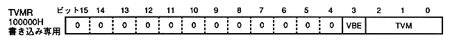

VBE | FCM | FCT | switch mode | switch time | |||||||||||||||||||||||||||
0 | 0 | 0 | changes every 1/60 seconds | ||||||||||||||||||||||||||||
0 | 0 | 1 | − | ||||||||||||||||||||||||||||
0 | 1 | 0 | Erase next field | ||||||||||||||||||||||||||||
0 | 1 | 1 | Change in next field | ||||||||||||||||||||||||||||
1 | 0 | 0 | − | ||||||||||||||||||||||||||||
1 | 0 | 1 | − | ||||||||||||||||||||||||||||
1 | 1 | 0 | − | ||||||||||||||||||||||||||||
1 | 1 | 1 | Erase with V blank, |
TVM | Screen mode | bit width | frame buffer | inter | VDP CLK (MHz) | |||||||||||||||||||||||||||||||||||||||||||||||||
bit 2 | 1 | 0 | Name | Resolution | NTSC | PAL | ||||||||||||||||||||||||||||||||||||||||||||||||
0 | 0 | 0 | 320 × 224 | 16bit / pixel | 512 horizontal | Yes | 26.8426 | 26.6564 | ||||||||||||||||||||||||||||||||||||||||||||||
0 | 0 | 1 | 640 × 224 | 8bit / pixel | Width 1024 | Yes | 26.8426 | 26.6564 | ||||||||||||||||||||||||||||||||||||||||||||||
0 | 1 | 0 | 320 × 224 | 16bit / pixel | 512 | Single dense | 26.8426 | 26.6564 | ||||||||||||||||||||||||||||||||||||||||||||||
0 | 1 | 1 | 320 × 224 | 8bit / pixel | 512 | Single dense | 26.8426 | 26.6564 | ||||||||||||||||||||||||||||||||||||||||||||||
1 | 0 | 0 | 320 × 240 | 16bit / pixel | 512 × | prohibited | 26.8426 | 26.6564 | ||||||||||||||||||||||||||||||||||||||||||||||
Other than the above | Prohibit setting (do not set) |
|||||||||||||||||||||||||||||||||||||||||||||||||||||